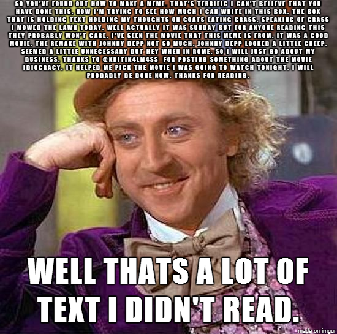

Comments
Technical
Structure of the website
My website is made up of four html files and one css file.
| Filename | Title | Filetype | Description |
|---|---|---|---|
| index.html | Home | HTML | The websites homepage with a short intro about me and the website. |
| past.html | Past | HTML | An outline of my past academic achievements and extracurricular activities. |
| future.html | Future | HTML | A description about my future aspirations. |
| comments.html | Comments | HTML | Explanation of the websites, technical, aesthetic and accessibility aspects. |
| websystems.css | N/A | CSS | The stylesheet that gives the website its style and pizzazz. |
Website Structure
The structure of the website are as follows:
Header
The header tag controls the title and nav menu of the page. These contain the h1 tag called that shows the title of the webpage.
It also contains the div class .menu that shows the navigation buttons “Home”, “Past”, “Future”, “Comments” that were made by making an unordered list with the ul tag and each button has been anchored with an a tag.
Main Content
The main content of the website is all contained in a div class called .main-body. It includes a mixture of heading tags h2, h3, paragraph tags p, table tags, unordered list tags ul, image tags img and span tags. Some span tags have their own id for specific colours and the img tags had to have their own id and be styled individually so that there was not a full-on stylistic horror show on the screen.
Footer
At the bottom of the page is the footer with a footer tag which simply put just includes a bunch of info such as name, university and student ID.
Here are some of the CSS configurations I used to format this website.
| Name | Type | Purpose |
|---|---|---|
| body | element | Sets format of the whole webpage. |
| header h1 | element | Sets the title format. |
| .menu | class | Sets the format of the navigation menu. |
| .main-body | class | Sets the format of the pages main content. |
| footer | element | Sets the format of the footer. |
| #red-span, #pizazz | ID | Set individual span colours other than orange. |
| #index-imag, #past-image, #future-image | ID | Sets the format for each image due to having different sizes. |
Aesthetics
The whole aesthetics and theme of this website is heavily based on or if not, borderline mimicking the video game Risk of Rain 2 (I am dangerously addicted plz help!). What is great about its aesthetics, is how simple everything looks making it easy on the eyes as well as having a retro game look.
Colour
Since I wanted the theme to be based off Risk of Rain 2, I had to take a screenshot of the games menu and use a color picker tool in order to get the exact colours the game used and transfer it all onto here. I used these colours to create the title, navigation menu, main body, tables and footer, setting the background color, opacity and putting a coloured border around it to create the same effect the in game menu uses.
Font
The font that is used is called bombardier (sounds badass!) which is the exact font Risk of Rain 2 uses for ever text in game. Luckily, I was able to download a file containing the font and apply it on the entire font on the webpage. I like how it gives off a computer log format look.
Interactivity
What I was able to do when it comes to interactivity is through CSS transitions. Whenever you load a page, the whole page would drop down revealing its content giving off that computer log look. With the navgigation buttons, I made them to change the background colour to yellow and add a border and outline when ever you hover over it. This is all similar to the game itself whenever you interact with its menu.
Structure
This is where I had to improvise how the website would look in conjunction to the websites theme. The layout of the website was done vertically which gives off a cleaner look and compliments its content aswell as synergising its layout when viewing it from a mobile phone.
Accessibility
Screen Readers and Structure
Every image that has been put on this website, has alt text. Meaning whenever the user has images switched off or using a screen reader, the images will be replaced with a text of what the image is. Since I have also used basic HTML tags such as h1, p it has allowed the webpage to retain its main structure for whenever the style sheet were to be disabled.
Navigation
When using this website, the user will aways know what page they are on, from the title above every page. Also with the structure of the webpage users will be able to find content since the only way to find more content is looking down. Finally they will know how to navigate using the nav menu since they will transition when you hover over them.
Font Size
The whole body of the webpages font has been set to 100% so that when the screen changes size the font size will change in relation to the screen. This includes screen sizes ranging to monitors all they way down to mobile phones.
Colour Contrast
Since the colours follow the games theme, half the job was already done. But I will explain how well the colours contrast with eachother. Having the background a darkish grey blue has enabled to use bright or light flashy colours for the text such as white and orange. With all the text having set a black shadow behind them, promotes them pop out more and easier to read while retaining the games theme.
